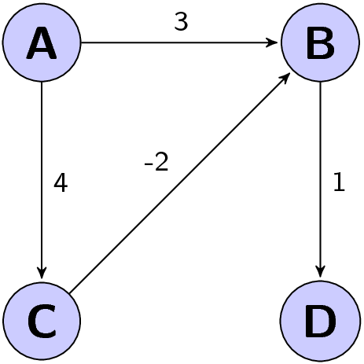

Für die Klausur in Algorithmen I sollte man Folgendes auf jeden Fall wissen:
- Wie sind die Landau-Symbole $\cal O(f(n)), \Theta(f(n)), \Omega(f(n))$ definiert? → Antwort
- Wie lautet das Master-Theorem? → Antwort
- Wie funktioniert der Bellman-Ford-Algorithmus und was macht er? → Antwort
- Wie funktioniert der Dijkstra-Algorithmus und was macht er? → Antwort
- Wie funktioniert der Algorithmus von Kruskal und was macht er? → Antwort
- Wie funktioniert der Algorithmus von Prim und was macht er? → Antwort
- Was ist ein Heap, ein B-Baum, ein Digitaler Baum und was ein Suchbaum? → Antwort
- Sei $A :=$ {Insertionsort, Quicksort, Mergesort, Heapsort, Selectionsort}. Beantworte und begründe für $x \in A$ folgende Fragen:
- Wie funktioniert x?
- Ist x stabil?
- Arbeitet x in-place?
- Hat x im Worst-Case optimales Laufzeitverhalten?
- Hat x im Worst-Case optimales Speicherplatzverhalten?
- Wie funktioniert Radixsort? → Antwort
- Warum ist Radixsort und Countingsort nur schlecht mit den Sortieralgorithmen aus vergleichbar?
- Welches Worst-Case Laufzeitverhalten hat die Breitensuche, welches die Tiefensuche?
Some Random Facts
Das ist ein Graph, bei dem der Algorithmus von Dijkstra fehlschlägt:
{kind=link}

Termine
Datum: Dienstag, der 31.07.2012 um 17:00 Uhr
Ort:
Die Sitze sind alphabetisch nach Ihrem Nachnamen eingeteilt:
A-C Hörsaal am Fasanengarten(50.35)
D-J Gerthsen Hörsaal(30.21)
K-O Audimax(30.95)
P-R Daimler(10.21)
S Benz(10.21)
T-V Tulla(11.40)
W-Z Neue Chemie(30.46)
Dauer: 120 min. (Quelle)
Punkte: 60
Übungsschein: Gibt es nicht. Bonuspunkte gibt es auch nicht.
Sitzplatzverteilung: hier
Nicht vergessen
- Studentenausweis
- Kugelschreiber
Klausurergebnisse
Die Klausurergebnisse hängen im SCC, 3. OG, aus.
Klausureinsicht: 23.08.2012 und 24.08.2012